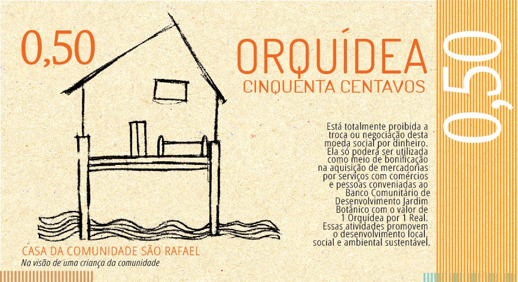
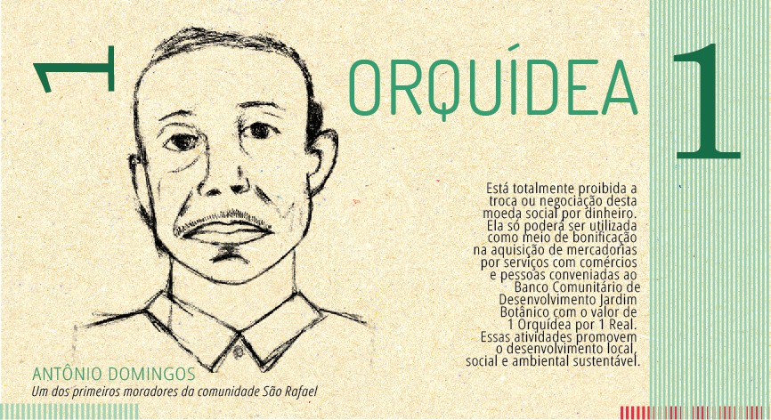
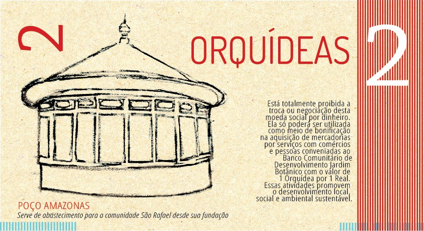
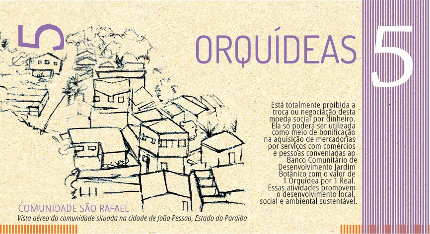
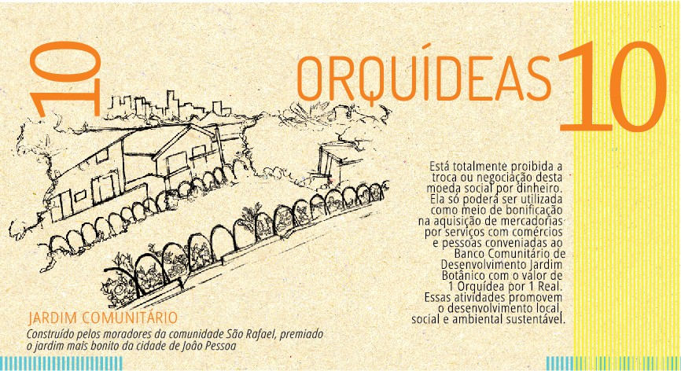

Consumo na faixa social
Consumo do mês70 kWh
Demonstração com pessoas e valores fictícios. Alterações nos painéis são temporárias.
Energia solar, crédito acessível e a moeda social Orquídea a serviço da comunidade de São Rafael, em João Pessoa (PB).
Demonstracao estatica: pessoas e valores ficticios. Alteracoes nao sao gravadas no servidor.
O Banco Comunitário de Desenvolvimento Jardim Botânico nasceu na comunidade de São Rafael, no bairro Castelo Branco III, em João Pessoa (PB), como uma iniciativa de economia solidária para gerar trabalho e renda em um território historicamente carente de acesso a crédito e serviços financeiros.
Em 2012, durante o II Encontro Nordestino de Incubadoras de Empreendimentos Solidários (ENIES) — com a presença do então secretário nacional de Economia Solidária, Paul Singer — a comunidade lançou sua própria moeda social: a Orquídea. Circulando lado a lado com o Real, a Orquídea incentiva o consumo no comércio local e mantém a riqueza gerada dentro do próprio bairro.
O banco foi oficialmente inaugurado em 27 de abril de 2013, com a participação de moradores, universidades e representantes do poder público estadual e municipal. Desde então, o Jardim Botânico integra a Rede Paraibana de Bancos Comunitários de Desenvolvimento, ajudando a replicar esse modelo de finanças solidárias em outras comunidades da Paraíba — e hoje soma a essa trajetória a geração de energia solar compartilhada como uma nova fonte de economia real para as famílias associadas.
A moeda social Orquídea, em suas cinco denominações





A energia fornecida pelo painel solar comunitário se transforma em economia para a comunidade. Explore quatro exemplos para entender como a cota solar participa do consumo de cada família.
Exemplos ilustrativos, não são faturas reais. A faixa social de 80 kWh e a cota de 120 kWh são as referências destes exemplos. A conta da concessionária de energia elétrica pode incluir impostos e outros encargos. Crédito de energia é medido em kWh, não em reais.